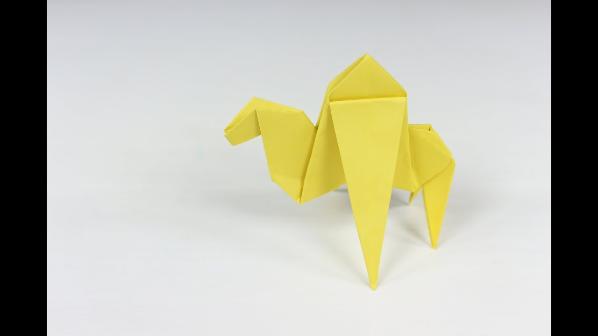
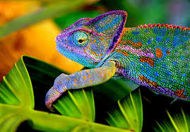
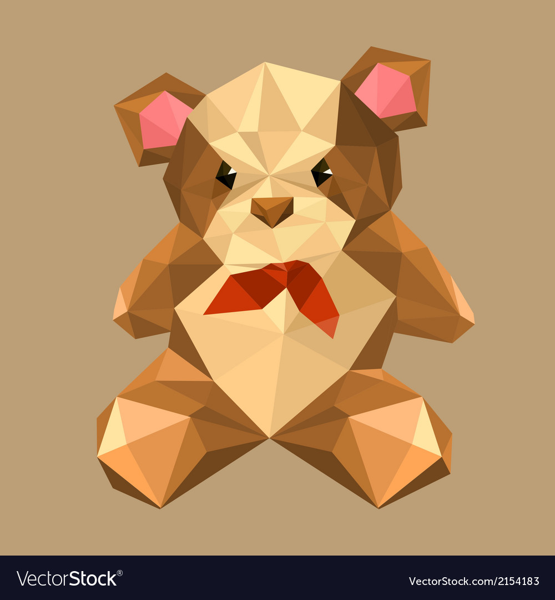

HERE ARE A FEW ORIGAMI DESIGNS.
TO LEARN ABOUT THEM CLICK ON THE PICTURES

THIS IS A CAMEL
Camels are known as the 'ship of the deserts'.
They can live without water for many days.
Camels can reach 7 feet in height (at the hump) and weigh up to 1500 pounds.
Camel can move easily across the sand because of its specially designed feet.

THIS IS A CHAMELEON
THIS IS A CHAMELEON
Chameleons are reptiles that are part of the iguana suborder.
These colorful lizards are known as one of the few animals that can change skin color.
A chameleon's tongue is roughly twice the length of its body.
Pandas are known around the world for their unique black and white appearance.
They resemble other bears in their shape, but have very distinctive markings.
All Giant Pandas have black patches around their eyes and black ears on a white head.

This is a teddy bear which all of us may have at home.
This is a teddy bear which all of us may have at home.
It is a very popular,cute and cozy toy.